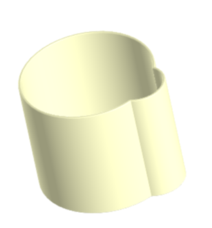
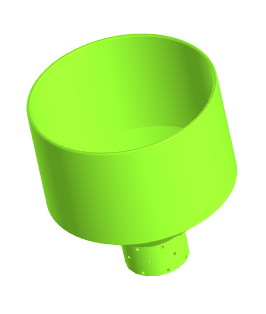
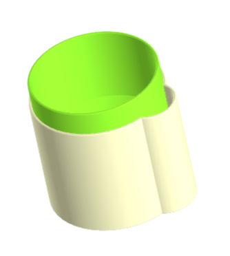

Многие растения в нашей стране из-за различного климата постоянно нуждаются в воде и во влажной почве, но ежедневно поливать их и следить за этим довольно сложно, у многих любителей домашних растений на это просто не хватает времени
Если вы являяетесь таким человеком, то для вас мы создали отличное решение. Горшок для влаголюбивых растений отлично подойдет для вас и для ваших комнатных цветов, поможет сэкономить ваше время, силы, а так же позволит не переживать о том, что ваше расстение может погибнуть из-за того, что вы не уследили за ним.
Наш горшок представляет собой две части, соединяющиеся и дополняющие друг друга. Нижний ярус представляет собой обычную ёмкость со специальным выступом сбоку для того, чтобы вы могли налить воду. Вторая часть является основной для посадки вашего растения, а так же снизу имеет специальные отверстия, чтобы почва вашего растения могла спокойно питаться влагой тогда, когда ей это нужно. Для удобства вы можете снять верхнюю часть, чтобы промыть нижнюю и поменять в ней воду. Удобство и комфорт нашего горшка был продуман именно для вас.
  